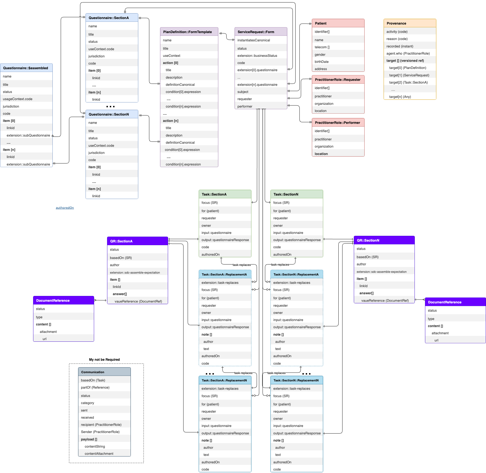

Ontario Health eForms Implementation Guide - Local Development build (v0.1.0) built by the FHIR (HL7® FHIR® Standard) Build Tools. See the Directory of published versions
eForms Home
| Official URL: http://ontario.ca/fhir/eforms/ImplementationGuide/fhir.ca.on.eforms | Version: 0.1.0 | |||
| Draft as of 2025-07-07 | Computable Name: eForms | |||
eForms
For a full overview of the OH eForms data model, be sure to view the eForms Confluence Page

Steps to Publish the eForms FSH Implementation Guide
The process of publishing the eForms IG involves the following steps, orchestrated through command-line scripts included in FSH project templates

Project Setup:
A standard FSH project is structured with specific folders :
input/fshfor FSH files,input/pagecontentfor narrative contentsushi-config.yamlfor configuration.
This is the default strucuture since this project was initialized via sushi --init.
##Updating the IG Publisher The first step before publishing is always to download have the latest version of the HL7 FHIR IG Publisher. Sushi provides a script to help:
- On Windows, run:
_updatePublisher.bat - On macOS or Linux, run:
./_updatePublisher.sh
This script downloads the necessary Java archive (.jar) file for the publisher.
Generating FHIR Resources with SUSHI:
The next step is to compile the FSH files into standard FHIR JSON resources. SUSHI handles this translation.
sushi build .
Running the IG Publisher:
Once the FSH files have been "sushied," you can invoke the IG Publisher to build the complete Implementation Guide. This is also typically done via a script:
- On Windows:
_genonce.bat - On macOS or Linux:
./_genonce.sh
This script executes the Java IG Publisher, pointing it to the generated FHIR resources and other input files. The publisher then performs a number of tasks, including validation, terminology expansion, and rendering of the HTML output.
Reviewing the Output:
The generated Implementation Guide will be located in the output/ directory of this project. Open the index.html file in this directory in a web browser to review the published IG.
open -a "Google Chrome" index.html
Distributing the eFormsIG Project and Enabling Others to Build
To allow other developers to build and publish this IG, you don't need to distribute the Java publisher itself. Instead, share the entire FSH project directory via git.
The recipient of this project would then follow the same steps described above:
- Clone this project repository.
- Run the
_updatePublisherscript to download the IG Publisher. - Run the
_genoncescript to build the Implementation Guide locally.